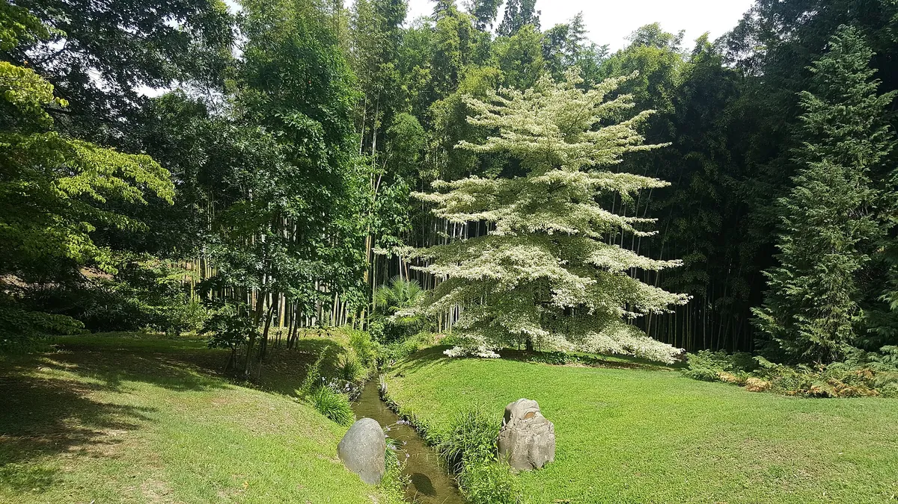
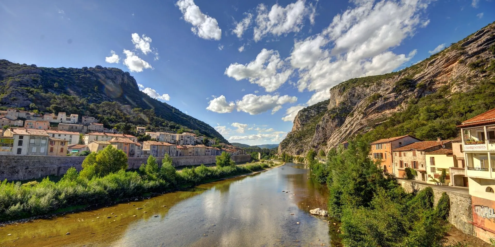
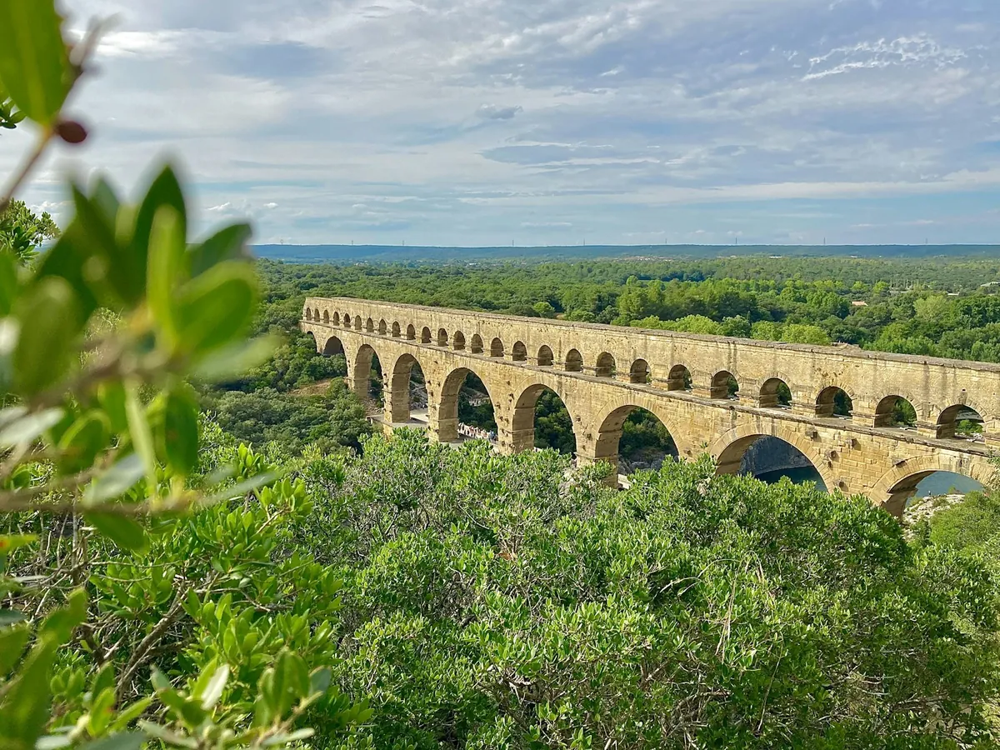
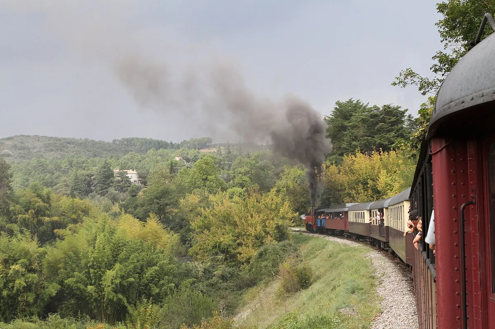
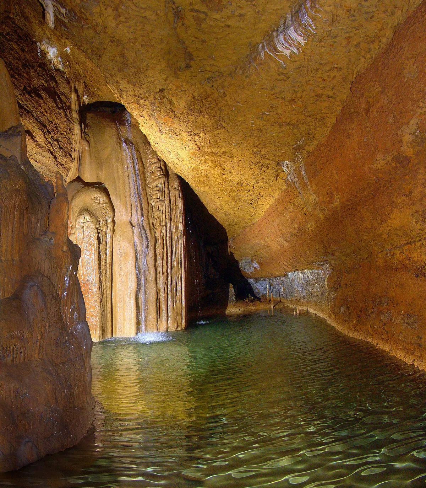
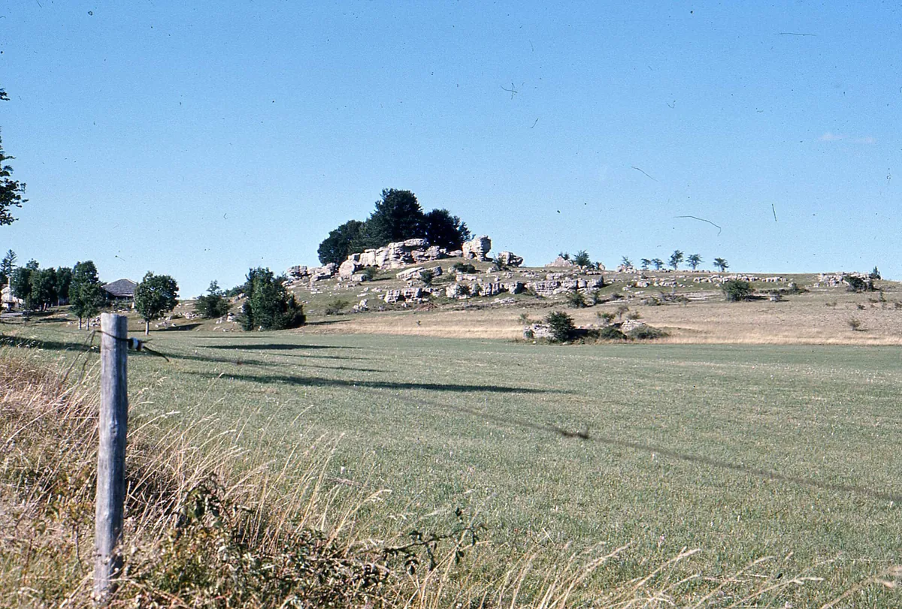
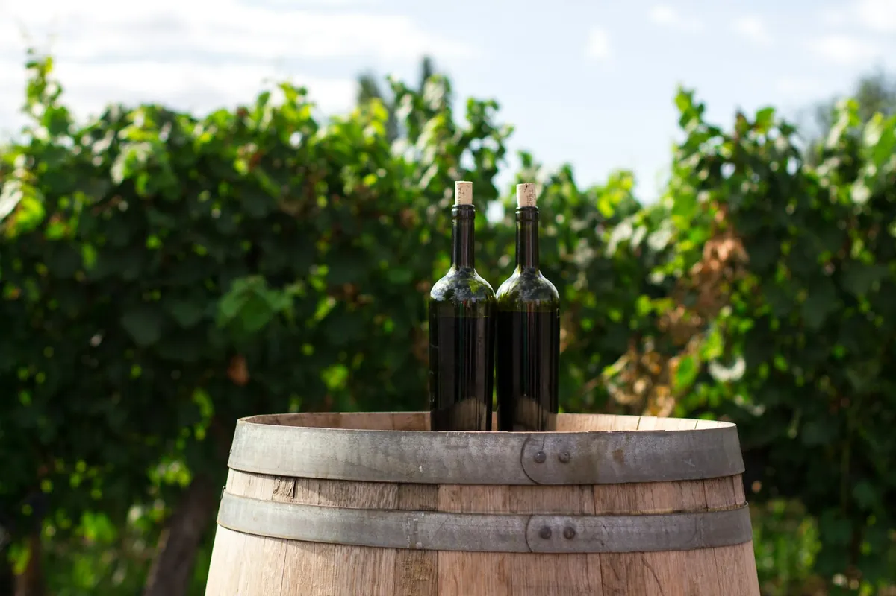
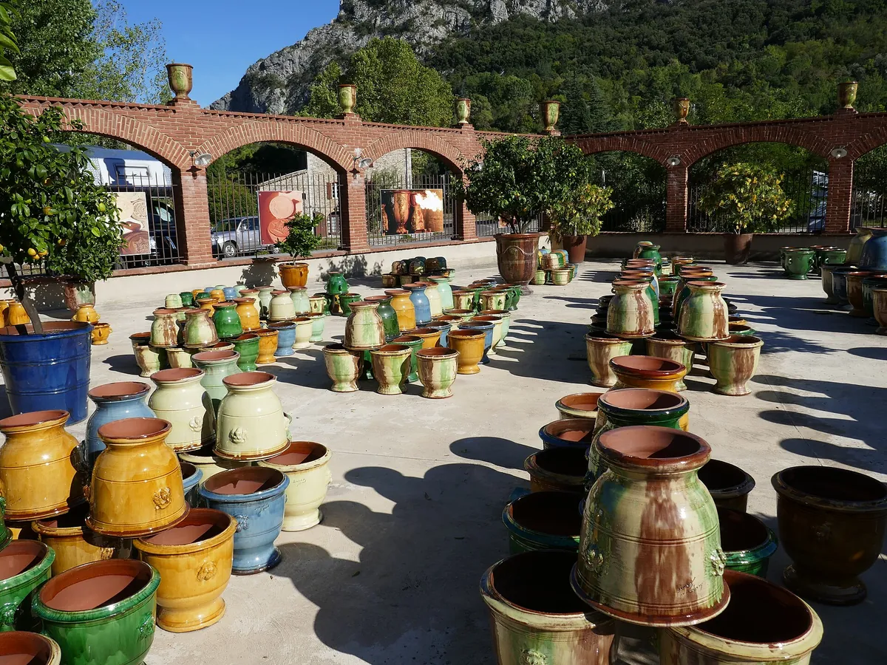

Visite de la Bambouseraie
Ce jardin botanique d’exception dévoile plus de 1000 variétés de
bambous, arbres et plantes remarquables.
site :
https://bambouseraie.fr


Ce jardin botanique d’exception dévoile plus de 1000 variétés de
bambous, arbres et plantes remarquables.
site :
https://bambouseraie.fr

Majestueux aqueduc romain, symbole de l'ingénierie antique, classé
au patrimoine mondial de l'UNESCO.
site :
https://pontdugard.fr

Découvrez la magie du passé à bord du Train à Vapeur des Cévennes,
une excursion unique à travers les splendides paysages cévenols.
site :
https://www.trainavapeur.com

un réseau souterrain fascinant de stalactites et de stalagmites
dans les Cévennes.
site :
https://grotte-de-trabuc.com

Randonnez à travers les majestueuses Cévennes, entre forêts, rivières et panoramas à couper le souffle.

Savourez les délices des vins des Cévennes : des cépages uniques et des saveurs authentiques à découvrir.

S’il y a des attractions à ne pas rater à Anduze, son marché nocturne en fait partie. Celui-ci est en effet le rendez-vous incontournable des vacances d’été dans ce charmant village du Gard.

Le marché du jeudi matin à Anduze est animé et convivial, offrant des produits locaux comme fruits, légumes, fromages, charcuteries, ainsi que des vêtements et de l'artisanat.

Le vélorail de Thoiras propose une aventure unique à travers les
paysages pittoresques des Cévennes. En pédalant sur des rails
désaffectés, profitez d'une sortie ludique et dépaysante en pleine
nature.
site :
https://www.veloraildescevennes.fr/

Les poteries d'Anduze, célèbres pour leurs jarres élégantes et durables, ajoutent une touche authentique à tout espace. Fabriquées par des artisans locaux, elles incarnent le savoir-faire et l'histoire cévenole.